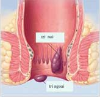
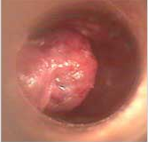
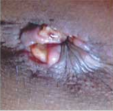
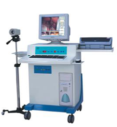

trĩ nội là gì
Trĩ nội là những búi sưng do các tĩnh mạch căng lên hoặc do phần da ở các nếp gấp viền hậu môn bị viêm, sưng to, sự tăng sinh của các mô liên kết hoặc tụ máu mà thành. Bề mặt ngoài của trĩ nội bị phủ một lớp da, có thể nhìn thấy, không thể đưa vào trong hậu môn, không dễ bị chảy máu. Triệu chứng chủ yếu là đau và cảm giác có vật lạ. Theo lâm sàng có thể chia thành trĩ nội các mô liên kết, trĩ nội do các tĩnh mạch căng lên, trĩ nội do viêm và trĩ nội do tụ má
  
NGUYÊN NHÂN
1. Do chế độ ăn uống không điều độ, thích ăn đồ cay đồ nóng.
2. Do viêm nhiễm hậu môn khi người bệnh không chú ý việc giữ gìn vệ sinh sạch sẽ hàng ngày.
3. Do áp lực dồn nén từ vùng bụng dưới đến từ việc người bệnh vốn có hệ tiêu hóa không tốt, lại ăn quá no, ngồi WC quá lâu cũng dễ dẫn đến trĩ ngoại.
4. Nguyên nhân đến từ nghề nghiệp: Ngồi nhiều hoặc đứng nhiều quá đều là những nguyên nhân không tốt và tính chất nghề nghiệp cũng ảnh hưởng tới việc hình thành trĩ ngoại
5. Thiếu vận động do người bệnh không chịu vận động hàng ngày.
6. Những nguyên nhân về giả phẫu cơ thể khi cơ địa mỗi người có sự khác nhau. Vùng hậu môn chịu nóng lạnh bất thường, táo bón, nghiện rượu hoặc ăn nhiều đồ cay, tanh cũng dễ làm kich thích trực tràng, ảnh hưởng đến sự hồi lưu huyết của tĩnh mạch, từ đó dễ gây nên trĩ ngoại. Áp lực dồn nén về vùng bụng dưới tăng cao do người bệnh đang mắc các bệnh về viêm nhiễm cổ tử cung hoặc các vấn đề liên quan đến viêm nhiễm tiền liệt tuyến, tư thế ngồi WC quá lâu cũng tạo điều kiện thuận lợi cho trĩ ngoại phát triển.
TRIỆU CHỨNG
1. Đại tiện ra máu:
Không đau, khi đi đại tiện thấy có kèm theo ít máu, máu chảy thành từng giọt hay từng tia là triệu chứng thường gặp thời kỳ đầu của trĩ nội và trĩ hỗn hợp.
2. Đau buốt:
Thời kỳ đầu của bệnh trĩ nội thường không đau buốt, có lúc chỉ cảm thấy căng tức hậu môn hoặc đi đại tiện khó khăn. Khi trĩ nội có sự tụ máu hoặc bị nghẹt thì mới thấy đau.
3. Ngứa:
Do kích thích của các búi trĩ sa xuống
hay dịch tiết
ra, làm cho hậu môn ẩm ướt không
sạch sẽ, gây
Eczema và ngứa.
4. Thời kỳ phát bệnh:
Trong thời kỳ đầu có những triệu
chứng không rõ
ràng, không đau, nếu bị táo bón hoặc tiêu chảy… sẽ
bị nặng thêm. Trong thời kỳ này có các dấu hiệu
như:
sưng tấy, lồi ra ngoài, nóng rát, đau…
tác hại
1. Hậu môn ẩm ướt, ngứa ngáy. Trĩ nội thời kỳ giữa và thời kì cuối, do cơ vòng hậu môn bị giãn, các búi trĩ dễ bị sa ra ngoài, kích thích đại tràng tiết ra lượng dịch nhầy lớn, dịch nhầy sẽ chảy ra ngoài qua hậu môn làm hậu môn ẩm ướt, gây viêm hậu môn và thấy ngứa ngáy khó chịu.
2. Do lo sợ bị đại tiện ra máu nên không dám đi đại tiện, nhịn đi đại tiện dẫn tới táo bón.
3. Thường xuyên ra máu trong thời gian dài có thể dẫn tới thiếu máu.
4. Trĩ nội nếu bị nghẹt sẽ gây đau dữ dội, khi bị nhiễm trùng thường bị sốt...
Phương pháp
Kỹ thuật xâm lấn HCPT là tiểu phẫu không dùng dao mổ, mà sử dụng trường điện dung cao tần làm đông và thắt nút các mạch máu, với khả năng kiểm soát tốt, không ảnh hưởng tới các vùng lân cận, nhanh chóng sinh nhiệt. Phương pháp này có nhiều ưu điểm như: độ an toàn cao, mất ít máu, ít gây đau, không tổn thương, không phù nề, không gây biến chứng, hồi phục nhanh, không phải nằm viện, thời gian tiến hành tiểu phẫu ngắn, một ca tiểu phẫu bằng phương pháp HCPT chỉ mất khoảng 15 - 20 phút và bệnh nhân hoàn toàn có thể đi lại, sinh hoạt bình thường.
AN TOÀN
ÍT ĐAU ĐỚN
NHANH CHÓNG
PHỤC HỒI NHANH
HIỆU QUẢ CAO
KHÔNG CẦN NẰM VIỆN
Lời khuyên B.Sỹ
Nếu bạn bị Trĩ Nội, thì phải chú ý gì trong cách vệ sinh và sinh hoạt.
Sau đây là lời khuyên nhỏ của chuyên gia PHÒNG KHÁM ĐA KHOA 168 HÀ NỘI : giấy vệ sinh mềm kẹp giữa hậu môn (nửa tiếng sau là được). Như vậy khi vận động hoặc đi lại sẽ khiến tĩnh mạch trực tràng mau chóng trở lại trạng thái bình thường.
Sau đây các bác sỹ đa khoa phòng khám 168 sẽ giới thiệu về 1 số điều cần lưu ý khi bị trĩ nội:
1. Không nên ăn quá nhiều thức ăn giàu chất đạm: cần phân bố hài hòa giữa chất đạm, chất xơ và tinh bột. Như vậy sẽ giúp nhuận tràng, dễ dàng đại tiện.
2. Rèn luyên thói quen đại tiện đúng giờ : không nhịn và không gắng sức quá để giảm thiểu hiện tượng tụ huyết trực tràng hậu môn.
3.Chế độ ăn uống : hạn chế đồ cay nóng, không uống rượu, bia và các chất kích thích. Ăn nhiều rau xanh, hoa quả, uống nhiều nước.
4. Làm việc và nghỉ ngơi điều độ: trong công việc cũng như cuộc sống cần kết hợp hài hòa giữa làm việc và nghỉ ngơi. Làm việc quá sức, vác nặng và ngồi lâu đều có thể khiến tĩnh mạch vùng hậu môn trực tràng ít vận động dẫn đến sưng phồng có thể dẫn đến thúc đẩy tuần hoàn một cách không đồng đều.
5. Phụ nữ mang thai cần tránh ngồi lâu hoặc đứng lâu: cần tránh táo bón và kịp thời điều chỉnh lại vị trí của thai nhi. Ăn nhiều rau xanh, hoa quả, ăn lượng phù hợp mè, mật ong để đảm bảo nhuận tràng.